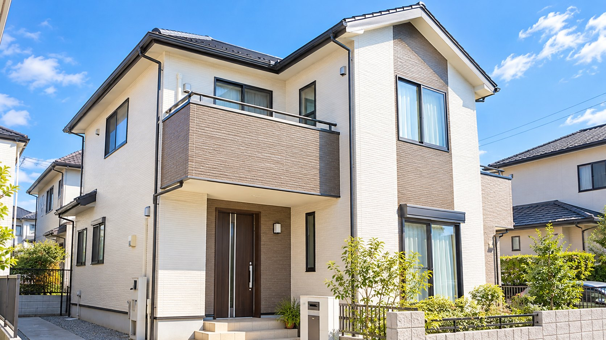

屋根に上らずに屋根を見る。
ドローンの無料診断のこと

こんにちは。ふじみ野市の株式会社松本塗工です。
「うちの屋根、いまどうなっているんだろう」
そう思っても、屋根ってなかなか自分の目では見られないですよね。はしごをかけて上るのは危ないですし、2階建てのおうちだと、地面からはほとんど見えません。
そこで松本塗工では、ドローンを使った無料診断を行っています。今日は、その診断がどんなものかを、かんたんにご紹介します。
屋根は、いちばん傷みやすい場所です
屋根は一年中、強い日差しや雨、風をまともに受けています。外壁よりも傷みが早く進むことが多いのに、ふだん目に入らないので、気づいたときには傷みが大きくなっていた、ということも少なくありません。
色あせ、コケ、ひび割れ、板金の浮き。こうした小さなサインのうちに見つけられれば、工事も小さく済む場合があります。
ドローンなら、屋根に上らずに確かめられます
ドローンを飛ばして、上から屋根を撮影します。人が屋根に上らないので、屋根材を踏んで傷める心配がなく、急な屋根や高い屋根でも、安全に確かめることができます。
ドローン診断のよいところ
- 屋根に上らないので、屋根材を傷めない
- ふだん見られない屋根のようすを、写真で見られる
- 写真をもとに、状態に合ったプランをご提案できる
撮った写真を一緒に見ながら、どこがどれくらい傷んでいるのかをご説明します。「言葉だけだとよくわからない」という方にも、安心していただけると思います。
塗り替えの予定がなくても、お気軽に
松本塗工は1981年の創業以来、新築塗装や塗り替えなど、のべ1万件以上の施工を行ってきました。お客様の住まいに長く寄り添い、末長くお付き合いさせていただくことを大切にしています。
「まだ塗り替えるか決めていないけれど、一度見てほしい」というご相談も大歓迎です。屋根のこと、外壁のこと、気になることがあれば、どうぞお気軽にご連絡ください。
ドローン無料診断・お見積りのご相談
0120-540-438
受付 9:00〜18:00(日曜定休)
この見本について(松本様へ)
この記事は、御社ホームページに書かれている内容(ドローン無料診断、1981年創業、のべ1万件以上の施工、末長いお付き合い)だけをもとに作った見本です。実際には、スマホで撮った現場の写真と、ひとことメモ(例：「所沢市 戸建て 屋根塗装 シリコン 5日間」)をお送りいただければ、施工事例やブログの記事にして、御社のホームページに掲載いたします。